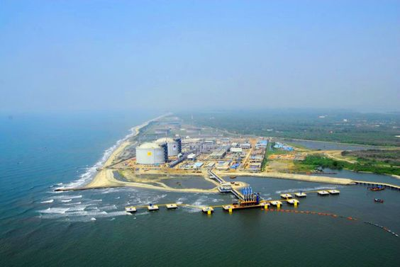

Ernakulam refers to the eastern, mainland portion of the twin cities of Ernakulam-Kochi in central Kerala, India. Located on the coast of the Arabian Sea, Ernakulam is a booming business metropolis. It is often referred to as the commercial capital of Kerala. Ernakulam has been a part of human settlements since the Stone Age. Rock-cut caves and dolmens are still a part of this city. Ernakulam was ruled by the Chera Dynasty and later, by the Kingdom of Cochin (Perumpadapu Swaroopam).
The main tourist attractions in Ernakulam are the Hill Palace Museum, Madhavan Nayar Foundation, Kaladi, Kodanad, Chendamangalam, Malayatoor, Bhoothathankettu and Thattekkad Bird Sanctuary. Being home to numerous temples and churches, Ernakulam is a favorite among domestic tourists visiting Kerala.The city enjoys a typical tropical monsoon climate. There’s only a minor difference in temperatures between day and night, and all through the year.
BEST PLACES TO STAY IN ERNAKULAM
Accommodation options are plenty in Ernakulam. The Gateway Hotel at Marine Drive and Hotel Renaissance in Ernakulam are well known. If you want to enjoy a luxury stay, you can checks hotels like Cherai Beach Resorts, The Malabar House and Bolgatty Palace. Hotel Abad Metro, Inn Presidency and Hotel Woods Manor are decent hotels too.
BEST PLACES TO EAT IN ERNAKULAM
Ernakulam offers a variety of South Indian cuisine. One can opt for vegetarian as well as non-vegetarian food in restaurants like New Tandoor, Punjab house, Browns restaurant and Shree Krishna Inn. The local food chains also serve mouthwatering food. Seafood is very popular here, with prawns and squids topping the list of favorites.

Mattancherry Palace
Vypin Island